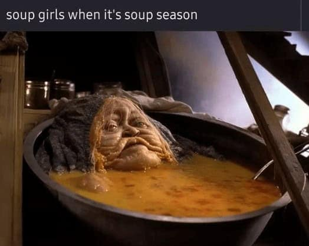

The Weird Soup
◀ Home

This is a very weird Soup
Am not sure but I think this soup cures all disases, or it might give you all disases. Imagine it as a mystery potion
Ingredients
- 3 dead rats
- 8 Orc Fingers
- 1 Entire witch
- 400 liters of water
How To List
- Catch 3 rats with cheesem if you can catch ratoutoullie
- Enslave 4-8 orcs, and pillage their village
- Find a random witch (should be located at your local library)
- Mix the it all with water, and you should have the WEIRD SOUP